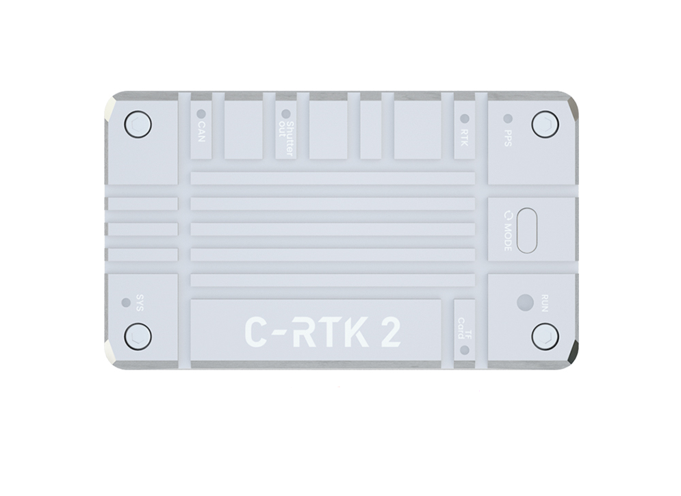
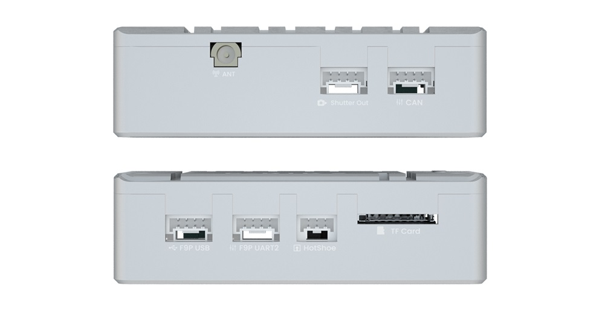
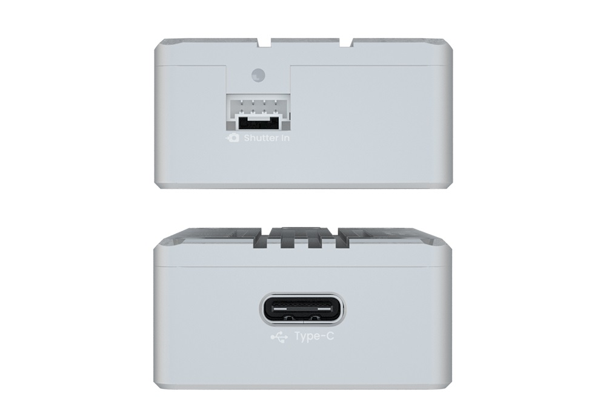
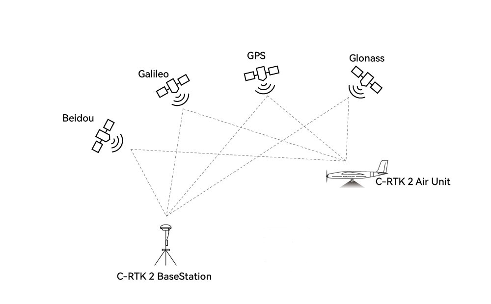
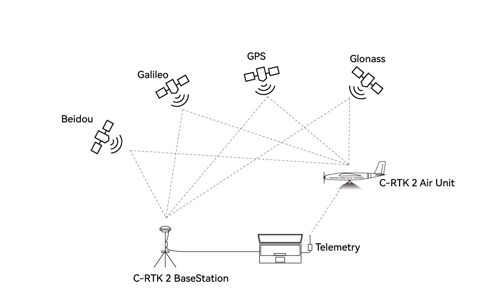

C-RTK 2 PPK Module¶
C-RTK 2 is a high-performance PPK/RTK positioning module created by CUAV for professional applications such as drone aerial survey/mapping). Its small shape/light weight, industrial-grade IMU combination, and combination of high-precision positioning modules can easily satisfy the most demanding Copter/VTOL Plane/Traditional Helicopter applications.

Other characteristics¶
High-performance H7 processor
High precision industrial grade IMU, Magnetometer and Barometer
Supports RTK and saves RAW raw data (PPK) at the same time
Multi-satellite and multi-frequency receivers
UAVCAN/Dronecan protocol
Supports camera hotshoe and shutter trigger
Compatible with ArduPilot/PX4 autopilot software, and using a CUAV X7 series autopilot, it is plug and play.
HS_USB C and micro-SD disk interfaces
Key Features¶
ZED-F9P RTK Receiver
184 Receiving channels
STM32H743VIH6(2M flash、1M RAM）Processor
- On-board sensors:
Accelerometer/Gyroscope: ICM20689
Magnetometer: RM3100
Barometer: ICP10111
TF card expansion (32G(MAX))
PPK(post processed kinematic) support
RTK(Real - time kinematic) support
- GNSS Bands
GPS:L1C/A,L2C
GLONASS:L1OF,L2OF
GALILEO: E1B/C E5b
Beidou:B1I B2I
Enhanced system
QZSS:L1C/A,L2C,L1S
SBAS:L1C/A
4(GPS、GLONASS、GALILEO、Beidou）concurrent GNSS
- Update rates
RTK Up to 20Hz
RAW Up to 25Hz(（Default 5Hz))
- Position accuracy（RMS)
RTK:0.01m+1ppm(level);0.02m+1ppm(vertical)
GPS:1.5m(level)
- Acquisition
Cold starts 24 s
Aided starts 2 s
Re-acquisition 2 s
- Sensitivity
Tracking & Nav –167 dBm
Cold starts –148 dBm
Hot starts –157 dBm
Rea-cquisition –160 dBm
- Anti-spoofng
Advanced anti-spoofng algorithms
- Protocols
NMEA
UBX binary
RTCM version 3.x
- Time pulse
0.25Hz~10Hz(Configurable)
- Anti-jamming
Active CW detection and removal Onboard band pass flter
- Support flight control type
Compatible with autopilots running ArduPilot/PX4 firmware
- Interfaces
1 Hotshoe
1 Shutter in
1 Sutter out
1 Type C(HS_USB)
1 F9P USB
1 F9P UART
1 Antenna(mmcx)
- Supply voltage
4.5~6v
- Operating temperature
-20~85℃
- Size
56x33x16.5mm
- Weight
-39g
Purchase¶
LED Indicators¶
{kind=link}
- SYS Led
100ms flashing: In bootloader
1000ms flashing: Normal working condition
- TF LED(TF Card）
Flashing: Noraml SD card reading and writing
Always bright: No TF card or file system error of TF card. Try cycling the power.
- Shutter In led (on side)
Flashing： Camera shutter signal input
- Shutter Out led
Flashing： Output shutter trigger signal to camera
- CAN LED
Dark： No data input and output
Blink once every 2 seconds： Data is being sent, but no data is beingreceived
Blink twice within 2 seconds: Data is being received, but no data is being sent
Blink 3 times in 2 seconds: Sending and Receiving data.
- PPS LED
On: no FIX
Flashing: FIX
- RTK LED
Blinking 3 times every 2 seconds: Sending and Receiving RTK data.
Flash：RTK Float
Solid On：RTK FIX
Dark：NO RTK
- RUN LED
Red led always On： System Error
Yellow led always On： Application Warning
Yellow flashing (100ms)： GNSS(F9P) Firmware update
Blue Flashing: Base station mode
Green Flashing: Rover mode
- Mode button
When not connected to the computer, press and hold for 3 seconds to switch the mode
Pinouts¶
 {kind=link}
{kind=link}

Preparation before use¶
Only use PPK¶
{kind=link}
1 PPK base station/Ntrip account
1 C-RTK 2 1
1 Mapping camera
1 Drone
PPK+RTK¶
{kind=link}
1 PPK base station/Ntrip account
1 C-RTK 2
1 Mapping camera
1 Drone
1 Data link
1 Computer
Note
C-RTK 2 can be used as an RTK base station and rover RTK gps, as well as a PPK rover gps,It is not recommended to be used as a PPK base station.